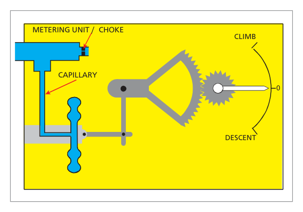
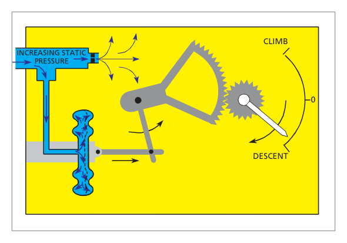
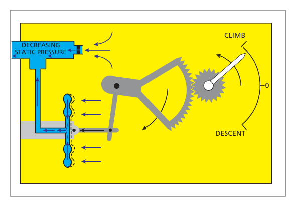
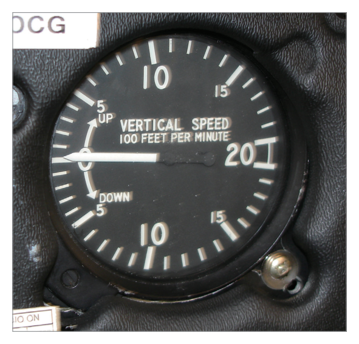
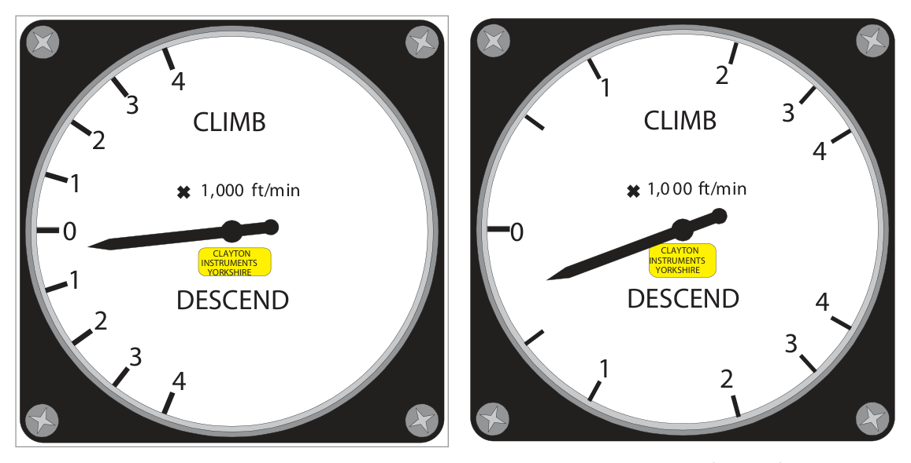

What this section covers: Why the VSI exists, what it measures, and its alternate name.
A pilot can obtain a rough indication of climb or descent rate by watching the angular movement of the altimeter pointer. However, a more accurate indication is needed for tasks such as achieving a specific height loss within a defined time on airways, or establishing a smooth rate of descent on a glide-path during an instrument approach.
The Vertical Speed Indicator (VSI) displays rate of climb or descent directly. The instrument senses the rate of change of static pressure, comparing current static pressure with the static pressure measured 4–6 seconds earlier. The VSI is also known as the Rate of Climb and Descent Indicator (RCDI).
2. Principle of Operation
What this section covers: The fundamental physics that drives the VSI needle.
When an aircraft departs from level flight, the ambient static pressure changes. The VSI measures the pressure difference across a restricted choke/metering unit.
Level flight: Pressures on both sides of the choke are equal — needle reads zero.
Climb: Capsule pressure falls quickly; choke delays the fall in the case — capsule compresses — pointer indicates climb rate.
Descent: The reverse — capsule expands relative to case — pointer indicates descent rate.
flowchart LR
A["Static Port (current pressure)"] -->|direct feed| B["Capsule (responds instantly)"]
A -->|via choke / metering unit| C["Instrument Case (responds slowly)"]
B -- pressure difference --> D["Linkage & Pointer"]
D --> E["Rate of Climb/Descent Indication"]
3. Construction
What this section covers: The physical components that implement the VSI principle.
The VSI consists of a capsule within an airtight case. The capsule connects directly to static and responds immediately. The case also connects to static but through a restricted choke, so its pressure changes are delayed. The differential pressure is converted by mechanical linkage to pointer movement.

Fig. 6.1 – VSI principle: capsule vs. case separated by metering unit — source p.73

Fig. 6.2 – VSI response during descent (increasing static pressure) — source p.73

Fig. 6.3 – VSI response during climb (decreasing static pressure) — source p.73
4. VSI Metering Unit
What this section covers: Why a simple hole is insufficient, and how altitude compensation is built in.
The basic physics produce an output in hectopascals per minute, but pilots need feet per minute. The relationship between pressure change and altitude change varies with altitude (more ft/hPa at high altitude). The restrictor uses a combination of capillary and orifice:
Capillary: Flow proportional to pressure difference, independent of ambient pressure.
Orifice: Flow varies with ambient air density.
The correct combination produces a near-constant feet-per-minute indication across the operational altitude range.
Exam Tip: The altitude compensation in the VSI is provided by the capillary and orifice combination in the metering unit — not a bimetallic temperature sensor.
5. Display
What this section covers: The VSI face and its features.

Fig. 6.4 – The VSI Display face — source p.74
The VSI pointer moves clockwise for climbs and anti-clockwise for descents around a centre-zero scale calibrated in ft/min. Diaphragm overload stops may be fitted to prevent damage at extreme rates. A zeroing screw is fitted on some instruments.
6. Errors of the VSI
What this section covers: All error types affecting the VSI — critical exam material.
6.1 Instrument Error
Due to manufacturing imperfections in the linkage and capsule.
6.2 Position (Pressure) Error
If the static source is subject to position error, a rapid airspeed change will cause a false static pressure change. The VSI will indicate a false climb or descent. Most noticeable during take-off acceleration.
Warning: A VSI climb indication during the take-off roll caused by position error does not mean the aircraft is climbing — do not react to it until established in the climb.
6.3 Manoeuvre-Induced Error
Short-term static vent pressure fluctuations during attitude changes cause false indications. Additionally, the inertia of the linkage counterbalance weight introduces delays when vertical speed changes during manoeuvres.
6.4 Time Lag
The pointer takes several seconds to settle while a steady pressure differential builds across the choke. Similarly, returning to zero on level-off takes time as pressures equalise. Most noticeable after a prolonged, high-rate climb or descent.
Static Blockage: Any blockage of the static line or vent causes the needle to return to zero. If static is blocked, the ASI, Altimeter, Machmeter, and VSI are all simultaneously affected.
flowchart TD
E[VSI Errors] --> IE[Instrument Error Manufacturing imperfections]
E --> PE[Position Error Worst during take-off acceleration]
E --> ME[Manoeuvre-Induced Error Vent fluctuations + linkage inertia]
E --> TL[Time Lag Worst after prolonged high-rate climb/descent]
Quick Revision – Section 6: Four errors: Instrument, Position (take-off), Manoeuvre-induced, Time lag (prolonged high-rate). Static blockage → needle to zero, all static instruments affected.
7. The Instantaneous Vertical Speed Indicator (IVSI)
What this section covers: How the IVSI overcomes lag, and its unique errors.
The IVSI incorporates a vertical acceleration pump (dashpot / dynamic vane) that responds immediately to vertical acceleration.
7.1 Mechanism
At the start of a descent the dashpot piston rises immediately.
As acceleration settles to a constant rate, the piston returns to its resting position; by this time the normal choke-based differential has established and maintains the correct reading.
Turbulence Over-Sensitivity: The highly sensitive dashpot over-reacts to turbulent bumps. Small fluctuations in turbulence should be ignored.
Steep Level Turn — False Climb: Centrifugal force causes the dashpot piston to sink towards the bottom of its cylinder, reducing capsule pressure — the instrument reads a false climb.
Exam Tip – IVSI in steep turn: Always shows a false climb. Piston sinks → capsule contracts → compass reads climb. This is a classic DGCA trap.
8. Presentation – Linear and Logarithmic Scales
What this section covers: The two dial formats and their respective advantages.
Feature
Linear Scale
Logarithmic Scale
Graduation spacing
Even throughout
Wide near zero, compressed at high rates
Low-rate readability
Small pointer movement — harder to read
Large pointer movement — easier to read
Range covered
Same as log type
Same as linear type
Preferred use
General purpose
IFR approaches, precision flying

Fig. 6.6 & 6.7 – Linear scale and Logarithmic scale faces — source p.76
Exam Tip: The logarithmic scale advantage is: larger pointer movement at low rates → easier to read. Not a greater range, not instantaneous readings, not a simpler mechanism.
9. Serviceability Checks
What this section covers: Permitted tolerances and pre-flight/in-flight checks.
On the Ground:
Read zero, or within: ±200 ft/min at temperatures −20°C to +50°C
±300 ft/min outside this temperature range
No apparent physical damage
In the Air:
Cross-check accuracy against altimeter + stopwatch during steady climb/descent
Must indicate zero in straight and level flight
Quick Revision – Chapter 6:
VSI senses static pressure rate-of-change via capsule/case/choke.
Metering unit (capillary + orifice) converts hPa/min → ft/min across all altitudes.
Four errors: Instrument, Position, Manoeuvre-induced, Time lag.
IVSI: dashpot eliminates lag; over-sensitive in turbulence; false climb in steep turns.
Logarithmic scale: better resolution at low rates.
Ground tolerance: ±200 ft/min (−20 to +50°C), ±300 ft/min outside.
Static blockage → needle returns to zero.
Practice Questions & Detailed Answers
Questions 1–9 reproduced verbatim from Oxford Instrumentation Chapter 6. Answer key from source.
Q1.The vertical speed indicator indications may be in error for some seconds after starting or finishing a climb or descent. The error is a result of:
a combination of time lag and manoeuvre induced errors
a combination of position error and manoeuvre induced errors
manoeuvre induced errors only
a combination of time lag and instrument error
Correct Answer: (a) a combination of time lag and manoeuvre induced errors
Explanation: When starting or finishing a climb/descent both time lag (choke needs seconds to establish new differential) and manoeuvre-induced error (vent fluctuations + counterweight inertia during attitude change) occur simultaneously. See Section 6.
Why the others are wrong:
(b) Position error is specific to sudden airspeed change (take-off), not the general start/finish of a climb.
(c) Manoeuvre-induced alone doesn't explain the prolonged lag seen when levelling off from a long climb.
(d) Instrument error is static and doesn't contribute to transient manoeuvre-related lag.
Instructor's Note: "Some seconds of error" = time lag + manoeuvre-induced. These two almost always pair together in DGCA questions.
Q2.The advantage of having the VSI dial presentation in logarithmic spacing rather than in linear spacing is that:
at low rates of climb or descent the pointer movement is much larger and so is more easily read
readings are instantaneous
a greater range of rates of climb and descent is shown
the internal mechanism is simplified by deletion of the calibration choke
Correct Answer: (a) at low rates of climb or descent the pointer movement is much larger and so is more easily read
Explanation: On a logarithmic scale, graduations near zero are widely spaced, so a small rate produces a proportionally larger pointer arc — improving readability at the low rates typical of IFR approaches. See Section 8.
Why the others are wrong:
(b) Instantaneous readings require the IVSI's dashpot — scale type has no effect on lag.
(c) Both scales cover the same range; logarithmic does not extend it.
(d) The choke is still essential regardless of scale presentation.
Instructor's Note: Logarithmic = better resolution at low rates, NOT greater range or simpler mechanism.
Q3.In the IVSI, lag error:
is overcome by feeding a sample of static pressure to the case and delaying it to the capsule
is overcome by using a special dashpot accelerometer assembly
is overcome by the use of logarithmic presentation
is only overcome when initiating a climb or descent
Correct Answer: (b) is overcome by using a special dashpot accelerometer assembly
Explanation: The dashpot (vertical acceleration pump) responds instantly to vertical acceleration, providing an immediate pressure signal before the normal choke differential develops. See Section 7.
Why the others are wrong:
(a) Describes the standard VSI — the IVSI adds the dashpot on top of this.
(c) Logarithmic scale is a display feature — no effect on pressure sensing lag.
(d) IVSI overcomes lag in both initiating and stopping a climb/descent.
Instructor's Note: "Dashpot", "accelerometer", and "dynamic vane" are synonymous IVSI terms — know all three.
Q4.Because the VSI measures rates of change of static pressure and not actual values of static pressure, position error:
never affects VSI indications
may cause errors in the VSI during the take-off run
may cause errors in VSI indications whenever airspeed is changed
may cause errors in VSI indications whenever airspeed is changed, even if there is no change in position error
Correct Answer: (b) may cause errors in the VSI during the take-off run
Explanation: Position error manifests most strongly when airspeed is changing rapidly. The take-off run is the most significant case of rapid acceleration. The VSI interprets the transient false static pressure as a rate of change. See Section 6.2.
Why the others are wrong:
(a) Position error does affect the VSI.
(c) & (d) Overstate the effect — not every airspeed change in cruise produces a significant VSI error, only rapid changes create a detectable rate-of-change effect.
Instructor's Note: The VSI is a rate instrument — position error affects it through the rate of change of position error with changing airspeed, not by its static value alone.
Q5.When entering a steep turn, an IVSI is likely to show:
no change in altitude
a climb
a descent
a slight descent at high airspeed only
Correct Answer: (b) a climb
Explanation: In a steep turn, centrifugal force pushes the dashpot piston towards the bottom of its cylinder. This lowers the pressure on the capsule side, which the instrument interprets as a climb (capsule contracts as if static pressure is falling). See Section 7.2.
Why the others are wrong:
(a) The IVSI does react — it shows a false reading, not zero.
(c) A descent indication would require the piston to rise; it sinks under centrifugal force — the opposite effect.
(d) The error occurs in all steep turns regardless of airspeed.
Q6.If the static vent becomes blocked during a climb:
the VSI will stop at the rate of climb of the aircraft at the time of blockage
the VSI will indicate a decreasing rate of climb
the VSI will return to zero
the VSI will indicate an increasing rate of climb
Correct Answer: (c) the VSI will return to zero
Explanation: With static blocked, no pressure change reaches either the capsule or the case. The existing differential across the choke equalises through the choke itself, collapsing to zero — the needle returns to zero. See Section 6.
Why the others are wrong:
(a) The instrument does not freeze at the current reading; the differential pressure bleeds away through the choke.
(b) & (d) Neither a decreasing nor increasing indication is sustained — the differential collapses completely.
Instructor's Note: VSI blockage → zero. Unlike the altimeter (freezes) or ASI (reads take-off speed), the VSI measures differential — so both sides equalise and the reading drops to zero.
Q7.In conditions of clear air turbulence:
the standard VSI is more sensitive
the IVSI is more sensitive
both types will react the same
the vertical acceleration pump will not be affected
Correct Answer: (b) the IVSI is more sensitive
Explanation: The IVSI dashpot responds to every vertical acceleration, including random turbulent bumps. This makes the IVSI pointer flutter considerably in CAT, which is a known limitation. See Section 7.2.
Why the others are wrong:
(a) The standard VSI's choke inherently damps short-duration accelerations — it is less reactive to turbulence.
(c) They differ significantly in turbulence response.
(d) The vertical acceleration pump is directly activated by turbulent accelerations.
Instructor's Note: In severe turbulence, the IVSI pointer may be nearly useless. Use altimeter trend or standard VSI for reliable information.
Q8.Change of temperature as an aircraft climbs or descends:
will affect VSI readings whenever temperature lapse rate differs from standard conditions
is compensated at the metering unit by means of a capillary and orifice
has no effect on the VSI as only static pressure is used in this instrument
may be allowed for by use of tables or computer
Correct Answer: (b) is compensated at the metering unit by means of a capillary and orifice
Explanation: The capillary-and-orifice combination in the metering unit provides built-in compensation for the varying relationship between pressure change and altitude at different altitudes and temperatures — giving a consistent ft/min output. See Section 4.
Why the others are wrong:
(a) The metering unit compensates for this, so non-standard lapse rates do not significantly degrade calibrated accuracy.
(c) Temperature affects air density and therefore the pressure-altitude relationship — it does matter, but is compensated internally.
(d) No external tables are needed; the metering unit handles it automatically.
Instructor's Note: Metering unit = capillary + orifice = altitude (density/temperature) compensation. This is the defining design feature of the VSI.
Q9.Permissible limits of accuracy of the VSI are ....... when ....... within a temperature range of ....... and ....... outside this range.
±250 fpm, on the ground, −20°C to +50°C, ±300 fpm
±200 fpm, at any height, −20°C to +30°C, ±300 fpm
±250 fpm, at any height, −20°C to +50°C, ±300 fpm
±200 fpm, on the ground, −20°C to +50°C, ±300 fpm
Correct Answer: (d) ±200 fpm, on the ground, −20°C to +50°C; ±300 fpm outside this range
Explanation: The serviceability limits are ±200 ft/min on the ground within the temperature range −20°C to +50°C, and ±300 ft/min outside that range. See Section 9.
Why the others are wrong:
(a) & (c) The tolerance is ±200 fpm, not ±250 fpm — a deliberate numerical distractor.
(b) The temperature range upper limit is +50°C (not +30°C), and the check is on the ground (not at any height).
Instructor's Note: Learn this sequence: 200 / ground / −20 to +50 / 300. Tested verbatim in DGCA. The +50 vs +30 confusion is the most common error.
Master Reference Tables
Parameter
Value
Condition
Section
Static comparison interval
4–6 seconds
Pressure window the VSI measures across
§1
Ground tolerance (normal)
±200 ft/min
Temperature −20°C to +50°C
§9
Ground tolerance (extreme temp)
±300 ft/min
Outside −20°C to +50°C
§9
IVSI steep turn error
False CLIMB
Centrifugal force sinks dashpot piston
§7.2
Static blockage result
Needle → zero
Differential equalises through choke
§6
Mnemonics:
VSI errors: "I Put My Tutu" → Instrument, Position, Manoeuvre-induced, Time lag